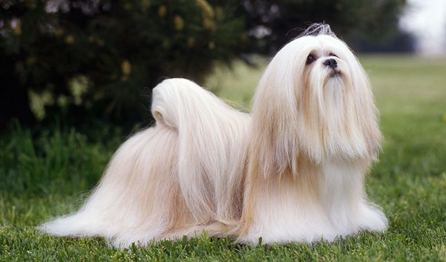

Lhasa Apsos:
Origins:
Lhasa Apsos are an 1,000 year old ancient breed originating from Tibet. They are named after the capital of the country, "Lhasa." While there's debate as to the actual meaning of "apso" in the Tibetan language, it's assumed that it's either affiliated with "goatee" or "beard", which describes a part of the Lhasa Apsos' appearance, or possibly it's protective nature. They were bred as sentinel along with the Tibetan Mastiff, they guarded the monks that resided in the monasteries. The Dalai Lama brought Lhasa Apsos to the United States as a gift back in the 1930's. The average life span is 14-16 years, but the oldest recorded Lhasa Apso lived to be 29 years old.
Temperament:
If you're in the market for a companion and an alert dog, look no further than a Lhasa Apso. Including my experience with Airi, their ears do not fail. Unless you train them consistently to where they don't react to certain sounds, be prepared for a barrage of growls/barks. Aside from that, they are generally calm and prefer the comfort of their owner's lap. Or feet. Maybe both, it just depends on your Lhasa. They are extremely loyal to their family, which plays a heavy part for their protectiveness. This is the breed to have if you live in apartment or maybe you want a companion that doesn't require too much from you. Lhasa Apsos are pretty independent. They are very comical breed, though. At least with my Airi, she'll do anything for a treat, and once she gets a treat, she'll go into spurts with zoomies.
Other Traits:
The nice thing about this breed (especially those with allergies) is that Lhasa Apsos are hypoallergenic. They rarely shed, which helps a lot with my allergies and likely those who have bad allergies. Grooming is a must for this breed, especially if you plan on growing out their fur. If you watch dog competitions like Westminster Kennel Club, often times, Lhasa Apsos have their fur fully grown. To me, they look like mops, but I digress. Even if you keep their fur short, it's highly recommend to brush them daily to maintain them. According to the AKC (American Kennel Club), they're considered a small breed. Though if you were to ask me, I would classify them as a medium size, I was shocked at how big Airi got when she hit 1 years old. Shih Tzus are probably the better option to those who want a similar breed and they're much smaller. To learn more about the difference, please click here. To get even more information about the breed, please visit the American Kennel Club website.